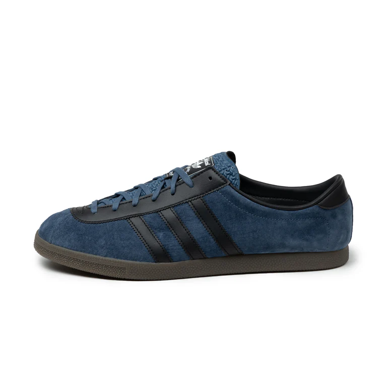
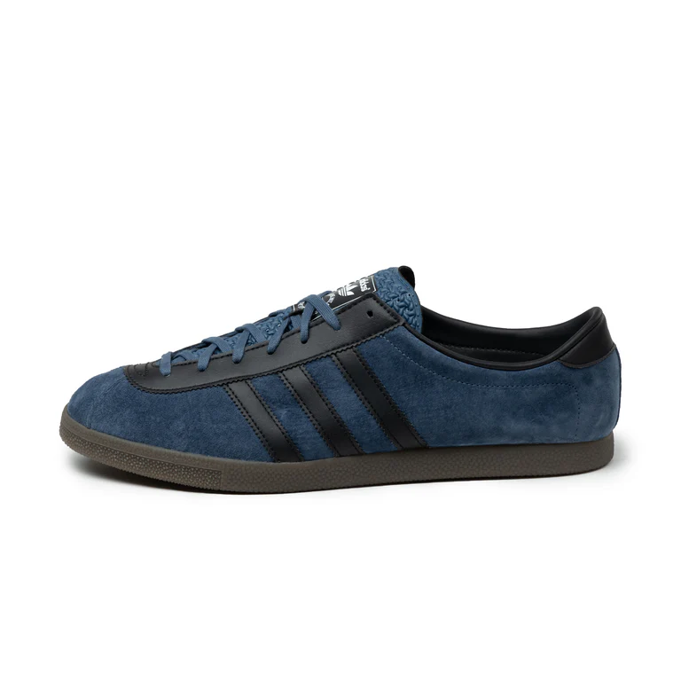

Adidas London
The Adidas London is a timeless classic from the "City Series" collection, designed to pay homage to the vibrant city of London. With its minimalist design and iconic look, the Adidas London has been a favorite among sneaker enthusiasts and casual wearers alike. Here's more information about this legendary shoe:
1. Origins and Design
The Adidas London was originally released as part of the City Series in the 1970s. It features a sleek, low-profile design with a suede upper and gum sole, making it perfect for everyday wear. The shoe's simple yet elegant aesthetic reflects the essence of the city it represents.
2. Iconic Silhouette
The Adidas London is known for its clean lines and unmistakable three stripes along the sides. The shoe is lightweight and comfortable, making it a versatile choice for both urban exploration and casual outings.
3. Cultural Significance
Over the years, the Adidas London has become a symbol of understated style. It has been embraced by various subcultures, including fans of retro fashion and sneaker collectors, who appreciate its heritage and timeless appeal.
4. Reissues and Updates
Adidas has periodically reissued the London, staying true to its classic design while incorporating modern materials for enhanced comfort and durability. The shoe's legacy continues to grow with each new release.
5. Versatile Colorways
The Adidas London has been released in a variety of colorways, each offering a unique take on the classic design. From traditional red and black to more contemporary shades, there's a style for everyone.
6. Collectibility
As part of the iconic City Series, the Adidas London is a sought-after item among collectors. Vintage models and limited-edition releases often command high demand in the sneaker community.
Check PriceContinue Reading